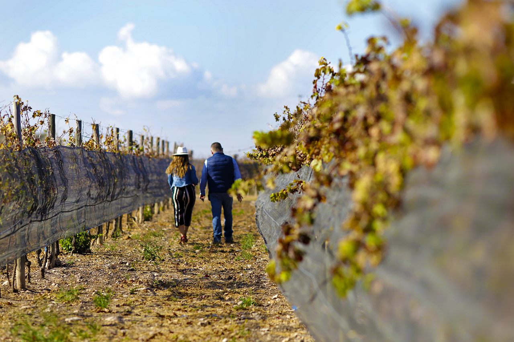

LOS VIÑEDOS
Jóvenes como la cultura del vino en México, pero fuertes y alegres de ofrecer una uva que muestra un terruño que
combina historia con visión de futuro. Recorrer los viñedos, es convivir armoniosamente con seis variedades: Cabernet
Sauvignon, Cabernet Franc, Merlot, Malbec, Syrah y Tempranillo.
Visitar los Viñedos Azteca disfrutando una copa de vino te transporta a un momento de paz, sólo comparable con
aquellos sueños y logros que has alcanzado en tu vida.
Asomarte a sus fronteras, admirando el paisaje, te permite establecer el vínculo entre nuestra tierra, la pasión
por el vino y el orgullo de ser mexicano.
Horarios:
Lun, Mie, Jue: de 11:00 a 15:00
Vie, Sab a Dom: de 11:00 a 18:00 hrs